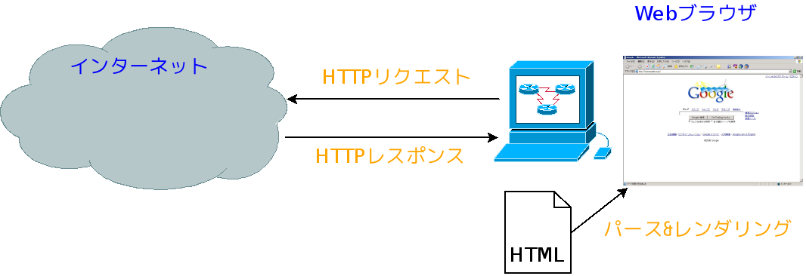
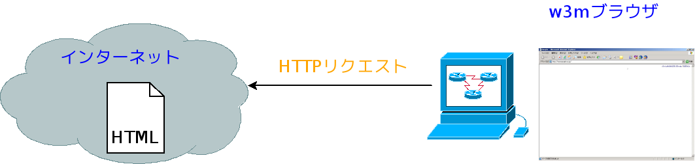
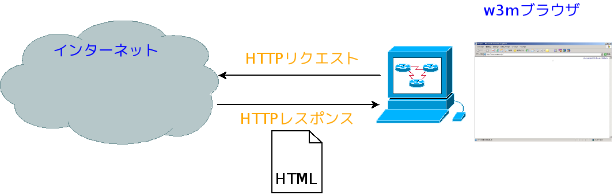
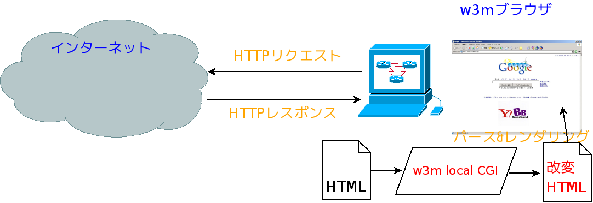

W3M local CGI
〜受身のWebサーフィンにバイバイ〜
 Corporation, Okinawa JAPAN
Corporation, Okinawa JAPAN
w3m普及委員会沖縄支部副部長補佐
宮里 忍
2009年12月25日
Webサーフィンの仕組み

Webサーフィンの仕組み

Webサーフィンの仕組み

Webサーフィンの仕組み

Webサーフィンの仕組み

従来のWebサーフィン
従来のWebサーフィンは誰かが用意したコンテンツをブラウザに表示するのみ。
実につまらん
W3M local CGI

W3M local CGI

W3M local CGI

W3M local CGI

W3M local CGI

W3M local CGI

w3m local CGI のあるWebサーフィン
誰かが用意したコンテンツを改変してブラウザに表示することができる。
w3m local CGI のあるWebサーフィン
改変とは
- HTMLを自分好みに書き換えることができる
- HTMLの中から興味があるものだけ表示することができる
- JavaScript依存を排除することができる